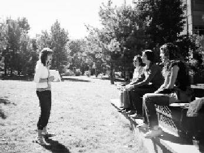

Önce kendimize, sonra yakın çevremize hoşgörü, girişimcilik, iş kalitesi, yurt sevgisi ve dürüstlük değerlerinin ne kadar önemli olduğunu anlatırız. Sonra düşeriz yollara, Türkiye'nin dört bir yanına bilginin ışığını yayarız. (Sinem Dinçol)
Sinem'in fotoğrafını gösterdiler. Hacettepe'nin bahçesinde üç kişi almış karşısına eğitim veriyor. Deli cesareti bu. Üç kız kanka oturmuşlar, Sinem ders veriyor. Semineri bittiğinde etrafında toplanan onlarca öğrenci alkışlamış Sinem'i. Ben üniversitedeyken bu cesareti gösteremezdim. Cesur Sinem.